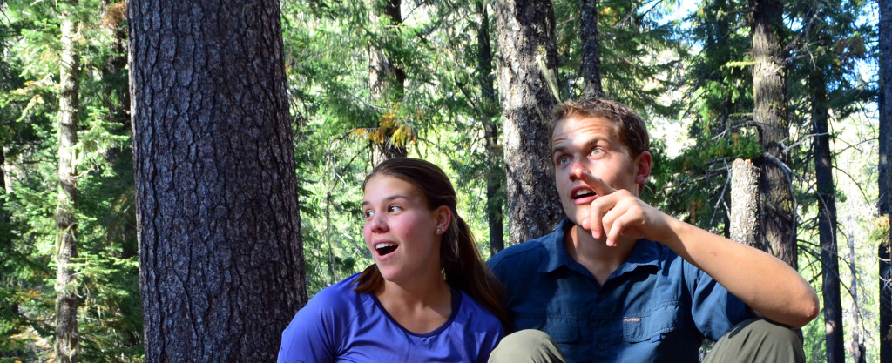

T – 16 Days… not that I am counting or anything
{kind=link}
While I was chatting with a friend I was questioned about my desire to quit my job, move out of my house in Santa Barbara, and go on this trip. A million reasons started flying through my head including: the money is sitting in my savings account, work is becoming less challenging, and the fact that I love Asian food. The question stopped me in my tracks. I almost felt as if I needed to justify my actions because I have it so great currently. Why was I dropping my life completely to heading into the unknown?
As of now, I would consider myself successful. I found a job right out of college. I am supporting the lifestyle I want within beautiful Santa Barbara County. I have the luxury of being able to explore wherever I want on the weekends. And it’s all been going great…except for the itchy feet syndrome. Some of you may know what I’m talking about. Others will think I am crazy. It started out as a slight tickle and has slowly crept up to inflict my brain. The “next trip” has been in the back of my mind ever since graduating at UCSB. The weekend excursions backpacking around California and even the epic out of state trips I have had the pleasure of being a part of (I have some awesome friends) have not been cutting it.
As luck would have it Grant, my lovely boyfriend, thought travelling in November would work perfectly with his schedule. November is the also time I hit the two year mark of working for the state, which is about where I wanted to be to leave anyway. The “what if” conversations morphed into “when is this happening” over the past couple of months. Cheap flights were found, and lo and behold, a date was set to fly into Bangkok on November 10, 2015.

So far we have covered:
- the who – Grant and myself
- what – adventure of a lifetime
- when – November 10th
- where – Thailand and beyond
- how – airplane
- why – see above and below (and the reason for the rambling nature of this post)
The rest of the why: I need a challenge. I want to be uncomfortable. I am looking forward to getting lost in a county that I won’t be able to speak the language within. I am ready to LEAP outside my comfort zone. Maybe I won’t have a comfort zone after this trip is over. Who knows… What I do know is that we live on a big planet. One I have seen very little of. I know this trip will be a humbling experience that can open my eyes to different cultures and lifestyles. I love learning and the world is the ultimate classroom. Bring it on Asia!
Some questions you may have:
When are you arriving? We will touch down on lovely, humid Thai soil on November 12th.
Where else are you going besides Thailand? We have a flight scheduled into Vietnam on December 5th. Other than that, we will be travelling to as many countries as make sense. I want to get immersed into the culture as much as possible so we may be travelling between countries slowly. I also want to see as much as possible so certain times may go quickly as well. We will see how it goes once we are there and move on accordingly.
Why southeast Asia? Jungle trekking, serenity, climbing, food, elephants, chaos, diving, public transportation. Is there more we could ask for?
When are you getting back? At this point it is up in the air. We are thinking sometime between February and May. Yes I am trying my hand at NOT being a compulsive planner, thank you for noticing.
Do you have all your shots? Check. And pills for malaria.
Can we get into contact with you while you are over seas? We will not have working cell number. You can always reach me by personal email. We will have a texting app called What’sApp that you can also talk to us on. Reach out to me beforehand to snag the info.
Can I get a postcard from you? Yup! Give us an address and we will be sure to send out one along our travels.
We will be updating this blog throughout our trip for your enjoyment (as well as our mother’s sanity). Grant will handle informative posts about our aspect of the trip for everyone interested in logistics (how-to’s as well as where to go). I will be updating you about our personal experiences. We will both be taking tons of pictures and some of them will be uploaded here. I will send out a facebook notification when we update this site so you can stay in the loop. If anyone is interested in an email shoutout about a new post going out, subscribe to our blog on the left.
Thanks for reading 🙂
Danielle
From a fellow Californian, CHEERS!!!! I have been planning a year+ getaway for, well, about a year now, haha. I too have a good job straight out of college, I moved to Manhattan Beach about a year and a half ago and have been enjoying myself, yet ever mindful of that oh so familiar itch, as you put it. During my daily Reddit perusing I came across your SEA post for packing and I became intrigued.
I will be heading to NZ first (Brother has his residency in Queenstown) for anywhere from 2-4 months, depending on cost etc. After that I will be heading to SEA for an unknown amount of time. I am absolutely petrified of leaving my job, moving all my crap back up north( Sacramento area) and then high tailing it with little more than a bag of my most utilitarian of items, plus some keepsakes.
Thank you for providing me with the anonymous support that I am making the right decision. I backpack, travel interstate about 1-3 times a month so I understand the itch to get out and explore. 3 years at my current job seems long enough to get my feet wet in an adult career; now I am ready for the adventure of a lifetime that I have been staving off for as long as I can remember.
Anyways, I just want to say thank you for your posts, they are very informative and inspiring! I can’t tell if you are still out on your travels, but if so may the good time continue rolling. Feel free to contact me if you want to chat, or have any advise for me! My concerns are of course- financial, ease of mobility, and figuring life out upon the return…The last part not so much 😉